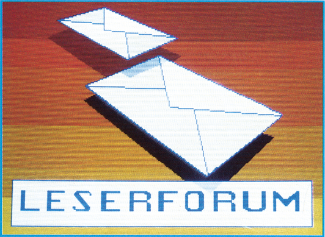

Druckerprobleme
Der Phillips Matrixdrucker PTS 6000 hat statt einem Netzkabel einen 6poligen Stromversorgungsstecker. Neben diesem gibt es auch noch ein RS232-Kabel für die Druckersteuerung. Wie schließe ich diesen Drucker am besten am C 64 an und wo bekomme ich ein entsprechendes Interface?
Freeze Frame und Floppy-Speeder
Ich besitze das Modul Freeze Frame Mk3.0 und den Floppy-Speeder Turboaccess. Leider arbeiten beide nicht zusammen. Das Betriebssystem des Speeders wird so modifiziert, daß kein Zugriff auf ein Floppy-Laufwerk mehr möglich ist. Auch der Kauf eines dreifach Moduladapters brachte keine Erfolge. Gibt es vielleicht doch eine Lösung, die ich bisher übersehen habe?
Sound-Expander am C 64
Wie kann man den SFX Sound-Expander von Music Sales Limited in Basic ansteuern? Welche Adressen benutzt der Sound-Expander? Vielleicht hat schon jemand Erfahrungen mit dem Sound-Expander gesammelt, denn trotz der benutzerfreundlichen Software wäre als zusätzliche Option eine Speicherung eines selbst erstellten Songs wünschenswert.
CP/M und Userport auf dem C 128
Ich arbeite seit geraumer Zeit an einem Programm zur parallelen Bit-Ein/Ausgabe auf dem C 128 zum Zweck der Steuerung von Schrittmotoren. Dabei treten folgende Probleme auf:
Die I/O-Adressen des User-Ports liegen normalerweise bei $DD03 (Datenrichtungsregister) und $DD01 (Datenregister). Unter CP/M ist dies anscheinend nicht der Fall. Laut »128 Intern« wird dieser Bereich ($D000 bis DFFF) auf $0000 bis $FFFF gespiegelt. Da aber die Mnemonics des 8080- sowie des Z80-Prozessors, genauer die OUT- und IN-Befehle, nur maximal 8-Bit-Adressen erlauben, könnte ich diese Adressen nur in der Zero Page ansprechen. Wo liegen also diese Adressen jetzt?
Vorausgesetzt ist natürlich, daß die Register der MMU richtig vorprogrammiert sind. Dies kann man eigentlich erwarten, da die MMU-Register ab $D500 beziehungsweise $FF00 auch unter CP/M dort liegen.
Laut CP/M-Plus-Handbuch von Digital Research sollte sich auf den Utility-Disketten ein File namens »PORTS.LIB« befinden, das die I/O-Adressen für das jeweilige CP/M-System beinhaltet. Leider existiert dieses File nicht. Dafür fand ich aber ein ähnliches (CXEQU.LIB) unter den Utilities. Die Adressen, die dort aufgeführt sind, stimmen zwar mit denen des C 128-Modus überein, nur hilft mir das auch nicht weiter. Hat jemand vielleicht ein vollständiges Programm entwickelt oder Erfahrungen mit ähnlichen Problemen gemacht?
»Pro Disk« auf der SFD 1001
Wie kann man das Programm Pro Disk (Ausgabe 6/86) so umschreiben, daß es mit der Diskettenstation SFD 1001 oder dem Laufwerk CBM 8250 zusammenarbeitet? Bei der SFD 1001 sowie auch beim CBM 8250 befindet sich der Directory-Header auf Spur 39, Sektor 0. Da die Directory bei der Floppy-Station 1541 allerdings ab Spur 18, Sektor 0 liegt, kann man mit dem Programm Pro Disk unter Icon 4 (Diskette aufnehmen) keine Daten von der SFD 1001 lesen. Welche Zeilen müssen eventuell im Programm geändert werden, damit statt Spur 18 jetzt Spur 39 eingelesen wird?
Multidata auf zwei Laufwerken?
Ist das Multidata-Programm auf zwei Floppy-Laufwerken mit den Geräteadressen 8 und 9 lauffähig? Nach Beschreibung sollte dies nur auf dem Commodore SX 64 mit 0 und 1 gehen. Ist es möglich das Programm entsprechend zu ändern?
Lochstreifen stanzen
Mich würde der Anschluß eines Lochstreifenstanzers mit acht Kanälen am C 64 oder CBM 3032 interessieren. Wo kann ein solcher Lochstreifenstanzer mit entsprechender Software bezogen werden? Welche Kosten fallen in etwa an? Ist eine Programmierung des Stanzers von Basic aus möglich?
MPS 803 am Amiga
Wie kann ich die serielle Schnittstelle des Commodore Druckers MPS 803 mit der seriellen Schnittstelle des Amiga verbinden?
Zeichensätze vom Character-Editor
Wie kann man einen Zeichensatz, der mit dem Character-Editor aus Ausgabe 5/86 unter SVC (Save Character-Set) gespeichert wurde, von eigenen Basic-Programmen nachladen und aktivieren? Bei der CCP-Routine (Create Character-Program) wird nur ein Zeichensatz gespeichert. Außerdem wird beim Start der Tastaturpuffer gelöscht, so daß ein Weiterladen ohne Maschinensprachekenntnisse unmöglich ist.
Videos über den 1901
Ich möchte meinen Videorecorder mit FBAS-Ausgängen an meinen Commodore-Monitor 1901 anschließen. Über den BAS-Anschluß des Monitors funktioniert dies zwar, ich erhalte jedoch nur Schwarzweiß-Bilder. Durch welche Maßnahmen erhalte ich farbige Bilder?
Doodle-Bilder verwenden
Wie kann man Bilder des Malprogramms Doodle in Basic-Programme einbinden oder aufrufen und anzeigen? Wer hat schon Erfahrungen mit dem Doodle-Format gemacht?
Die neun Prinzen von Amber
Nachdem ich das große Anfangsproblem im ersten Bild des Adventures »Nine Princes in Amber« mit »ATTACK MAN« bewältigt habe, ging es eigentlich recht flott weiter. Ich habe nun jedoch schier unlösbare Schwierigkeiten mit Bruder Julian im Wald von Arden. Wie kann man ihn im Schwertkampf besiegen, da es offensichtlich unmöglich ist dem Kampf auszuweichen?.
Es ist richtig, daß mit Julian auf jeden Fall gekämpft werden muß. Er muß besiegt, jedoch nicht getötet werden, sonst kommt man später nicht weiter. Das Hinderliche am Schwertkampf ist nur, daß man nicht speichern kann. Nachdem man also aus Randoms Auto gestiegen ist bietet sich einem die letzte Möglichkeit den Spielstand zu speichern. Danach fordert man Julian mit »DRAW SWORD« zum Kampf auf. Außerdem ist jeder Kampf mit einem gewissen Prozentsatz an Variabilität versehen. So kann es passieren, daß man mit einer einmal erfolgreichen Lösung nicht immer wieder zum Ziel gelangt. An Verben akzeptiert das Programm während des Kampfes nur PARRY, THRUST, CUT, JUMP und DODGE mit den Richtungsangaben HIGH und LOW, sowie sämtliche Kombinationen daraus. Da das Ganze eine ziemlich haarige Sache ist, die zudem viel Zeit kostet, hier ein Ansatz für den Sieg: PARRY CUT HIGH - FEINT CUT HIGH - CUT LOW - JUMP - PARRY CUT - PARRY THRUST - PARRY THRUST LOW - PARRY - PARRY CUT HIGH - PARRY CUT - PARRY CUT HIGH - PARRY CUT LOW - PARRY CUT - PARRY CUT HIGH.
Sollte Julian bis dahin noch nicht aufgegeben oder zumindest zwei Treffer eingesteckt haben, kann man es zwar noch weiter versuchen, allerdings empfielt sich eher ein Neustart. Da man im Spielverlauf noch maximal drei weitere Schwertkämpfe zu bestehen hat, kann man versuchen an andere Gegner ähnlich heranzugehen. Jeder hat jedoch seine eigene Kampfweise und man muß versuchen diese herauszufinden. Julian ist, wie man sieht, ein besonders stürmischer Angreifer und reagiert dementsprechend stark auf das Verb »PARRY«.
Woher bekommt man ein Copyright?
(1) An welche Ämter muß ich mich wenden, um mir ein Copyright auf ein Programm eintragen zu lassen?
(2) Was kostet eine solche Eintragung ungefähr?
(3) Wie lange gilt das Copyright?
Ausgabe 10/86
(1) Laut §7 im Urheberrechtsgesetz gilt folgendes: Urheber ist der Schöpfer des Werkes (in diesem Fall des Computerprogrammes). Man muß also einfach an irgendeiner Stelle des Programms kenntlich machen, daß man selbst der Autor ist. Natürlich kann man auch schreiben: (c) 1986 by XY. Der Paragraph 8 Absatz 1 beachtet auch noch den Fall, daß weitere Urheber (Miturheber) vorhanden sind.
(2) Da man keine Ämter besuchen muß, kostet so eine »Eintragung« nichts. Man sollte im Zweifelsfall sein Urheberrecht (Copyright) nur beweisen können.
(3) Das Urheberrecht erlischt 70 Jahre nach dem Tod des Urhebers oder des längstlebenden Miturhebers.
Änderungen im C 64-Kernel
Ich habe in meinen C 64 das Kernel, Bereich $E000 bis $FFFF, auf ein EPROM gebrannt. Ich möchte beim Einschalten meines C 64 eine andere Text-, Hintergrund- und Rahmenfarbe haben. Wer kann mir dabei helfen?
Ausgabe 11/86
Um andere Einschaltfarben zu bekommen, muß das Betriebssystem in den Bereich ab $6000 oder einen anderen freien Speicherbereich verschoben werden. Dann können mit einem Monitor die Speicherstellen $6535 (Schrift), $6CD9 (Rahmen) und $6CDA (Hintergrund) nach eigenem Geschmack verändert werden. Von Basic aus geschieht dies mit:
POKE 25909,Schriftfarbe
POKE 27865,Rahmenfarbe
POKE 27866,HintergrundfarbeFür andere Speicherbereiche sind die Adressen entsprechend anzupassen.
Der Einschalttext, der sich im Bereich $6475 bis $64AA befindet, kann dann ebenfalls mittels eines Monitors verändert werden. Dann kann der Bereich von $6000 bis $8000 (oder entsprechend) auf ein EPROM vom Typ 2764 gebrannt und mittels eines Adaptersockels im Computer oder auf einer Betriebssystemkarte am Expansion-Port betrieben werden.
Ärger mit dem C 128
Die Firma Commodore liefert kein Handbuch zur Floppy-Station 1571 aus, obwohl es nach eigenen Angaben zum Lieferumfang gehört, was ja auch der Verdingungsordnung entspricht.
Ausgabe 8/86
Nachdem ich einen C 128 in einem Kaufhaus erworben hatte stand ich vor dem selben Problem. Zunächst wurde auch mir, wie in Ausgabe 8/86 erwähnt, gesagt, ich solle mich an Commodore direkt wenden. Da die Beschaffung jedoch noch Kosten verursacht, habe ich folgendes gemacht. Ich habe beim Kaufhaus so lange nachgefaßt bis von dort aus eine kostenlose Nachlieferung des Handbuchs von Commodore veranlaßt wurde. Das Handbuch konnte ich mir dann direkt beim Kaufhaus abholen. Es liegt also am Engagement des Händlers, ob das Handbuch kostenlos geliefert wird.
Fragen zum C 128
Im C 128-Modus kann man durch »POKE 2599,0« den Cursor einschalten und durch »POKE 2599,1« wieder ausschalten. Wie kann man aber nun verhindern, daß der Cursor als reverses Leerzeichen auf dem Bildschirm stehen bleibt?
Ausgabe 7/86
Zwar gibt es auch für dieses Problem eine Lösung mit PEEK und POKE, es geht allerdings auch viel einfacher. Lassen Sie nach dem Abschalten des Cursorblinkens das DELETE-Zeichen ausgeben, wodurch ein eventuell vorhandenes reverses Leerzeichen gelöscht wird: PRINT CHR$(20)
SAVE-/LOAD-Anzeige für 1571?
Ist es möglich, das Floppy-Laufwerk 1571 mit einer Anzeige für die Ausführung der Befehle SAVE und LOAD auszurüsten?
Ausgabe 7/86
Die Floppy 1571 kann nur unterscheiden, ob sie liest oder schreibt, nicht aber ob sie für einen Speichervorgang schreibt oder ein reines Datenfile auf Diskette bringt. Dies gilt natürlich entsprechend auch für den Lesevorgang. Um eine solche SAVE/LOAD-Anzeige zu realisieren, müßte man das Betriebssystem des Computers, das für SAVE und LOAD verantwortlich ist, entsprechend abändern. Eine reine Hardware-Lösung gibt es jedoch nicht.
Spiel-Probleme
Das Programm »Springvogel« aus dem 64'er-Magazin stürzt bei Verwendung von Turbo Tape ab. Was kann man hier tun?
Ausgabe 7/86
Die Lösung besteht darin, Turbo Tape nach dem Laden von »Springvogel« abzuschalten. Dies geht mit ein paar SYS-Befehlen, die ich schon in Ausgabe 12/85 auf Seite 107 vorgestellt habe (Reset ohne Datenverlust). Hier nochmals die Vorgehensweise:
- Springvogel mit Turbo Tape laden.
- SYS64789:SYS58451:SYS58784 ohne Zeilennummer (!) eingeben.
- Springvogel starten.
Technischer Defekt?
Seit einiger Zeit habe ich mit meinem C 64 technische Probleme. Wenn ich ein Programm geladen und kurze Zeit keine Eingaben gemacht habe, dann führt das Gerät einen Reset aus und meldet sich mit der Einschaltmeldung wieder. Die Abgabe meines Computers in eine Werkstatt zwecks Fehlersuche brachte neben dem Ergebnis »kein Defekt feststellbar« und 29,75 Mark Rechnungsbetrag nichts weiter zutage. Ich möchte noch erwähnen, daß der Fehler nicht ständig, sondern nur von Zeit zu Zeit (allerdings doch recht häufig) auftritt. Wer hat an seinem C 64 schon einen ähnlichen Fehler gehabt? Wie kann der Fehler beseitigt werden?
Ausgabe 7/86
Auch bei mir machte der Computer regelmäßig einen Reset. In der Endphase war dies sogar so schlimm, daß er sich im Reset so aufhängte, daß selbst Ein- und Ausschalten nichts mehr nützte. Zur Fehlerbeseitigung lötete ich den IC U20 (NE556) aus und setzte dafür ein neues IC ein. Danach funktionierte der Computer wieder fehlerfrei. U20 ist ein Hauptbestandteil des Resets und sollte dieser IC nicht kaputt sein, so kann es auch noch an U8 (SN7406) liegen. Im Zweifelsfall diesen gleich mit ersetzen.
Computer in die DDR?
Ich möchte gerne Bekannten aus der DDR Computer beziehungsweise Computerzubehör zukommen lassen. Wer weiß wie man dies am zweckmäßigsten bewerkstelligt? An welche Stellen kann man sich wenden? Ist es möglich auch selbst etwas zu verschicken? Wenn ja, was und in welcher Menge. Mit was für Preisen muß jemand aus der DDR rechnen, der Computerartikel dort kaufen möchte?
Da ich in der letzten Zeit in der DDR war, habe ich mich gleich genauestens über den Versand von Computern aus der Bundesrepublik in die DDR informiert und bekam folgende Informationen: Der Versand von Computern, Druckern, Floppy-Laufwerken und deren Zubehör ist als Geschenksendung an Privatleute offiziell genehmigt. Verboten sind jedoch alle nicht visuell lesbaren Datenträger wie zum Beispiel Kassetten, Disketten und ähnliches. Es ist also egal, ob der Datenträger bespielt oder leer ist; sogar original verschweißte Disketten werden ersatzlos eingezogen. Daher ist es verständlich, daß Disketten in der DDR absolute Mangelware sind und ein Zehnerpack DS/DD-Disketten dort mit 2000 Mark Ost gehandelt werden. Man sollte sich nur einmal vorstellen, daß man entsprechend einem inoffiziellen Umtauschkurs von 5:1 dort 400 Mark West dafür bezahlen müßte. In staatlichen Geschäften gelten folgende Preise (in Mark Ost):
| C 128 | ab 5500 Mark |
| Drucker | ab 3500 Mark |
| Floppy-Laufwerke | ab 4800 Mark |
| Tischrechner | bis 1500 Mark |